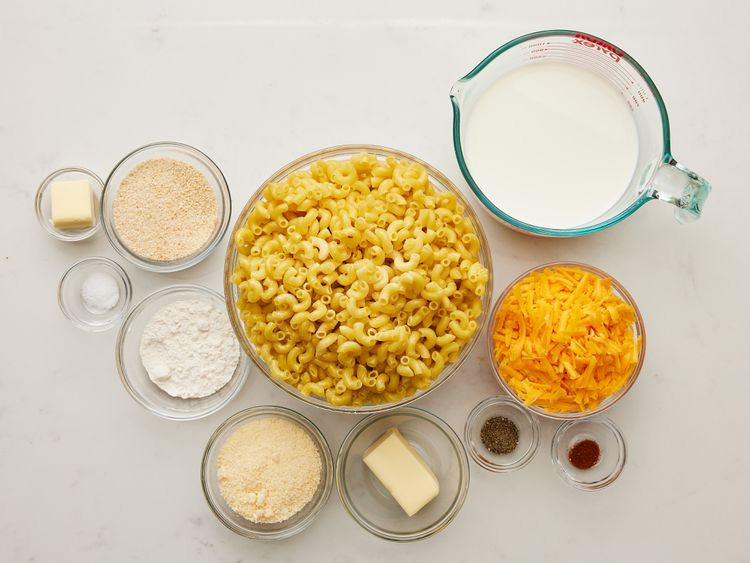
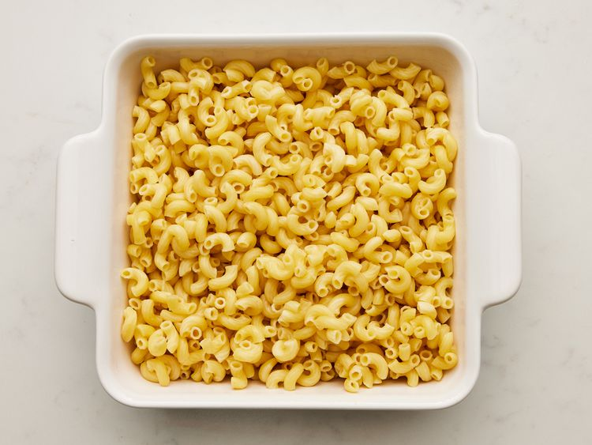
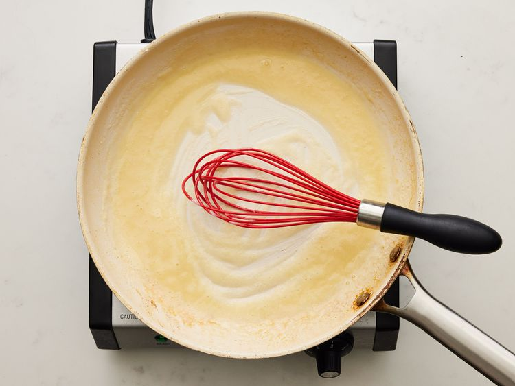
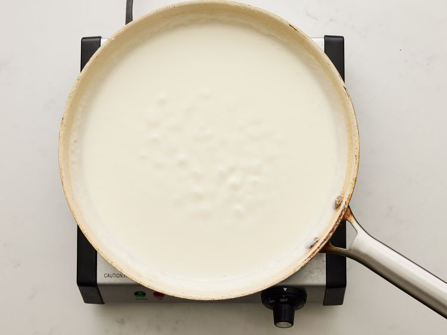
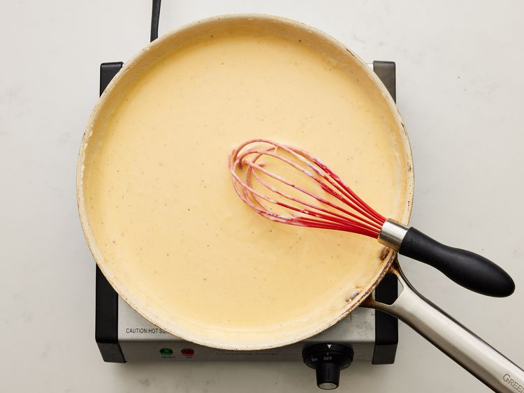
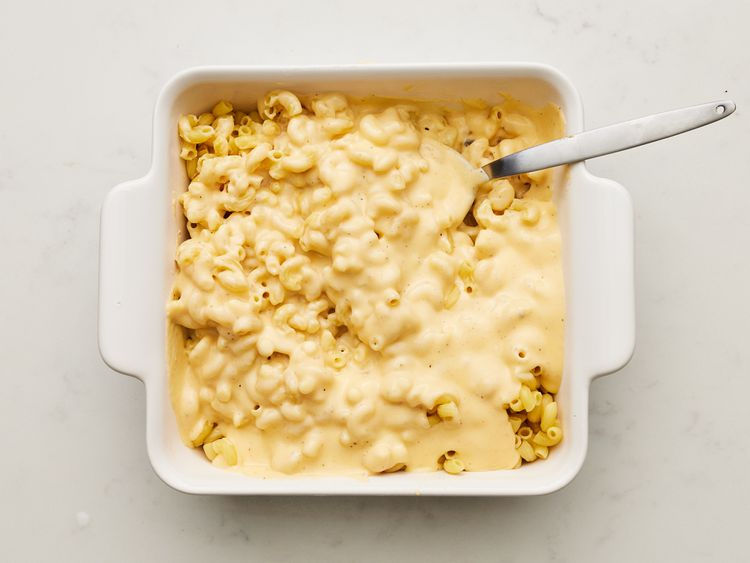
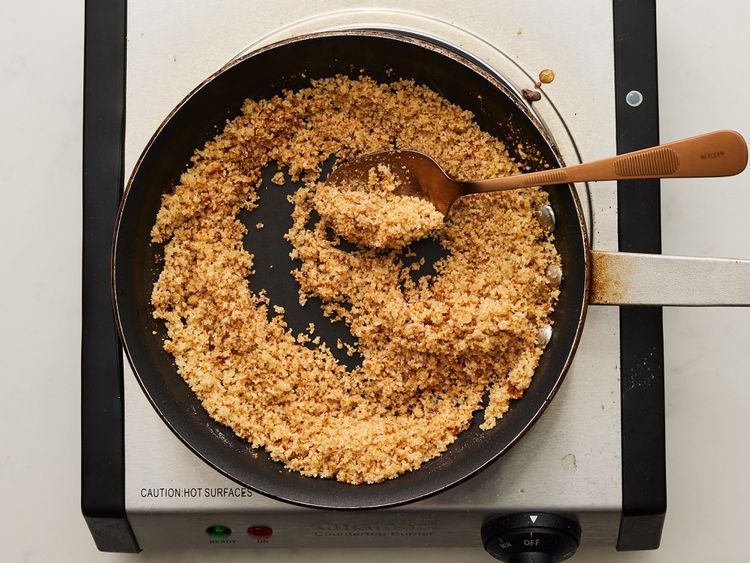
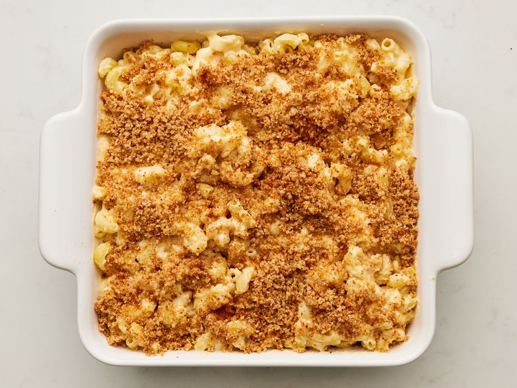
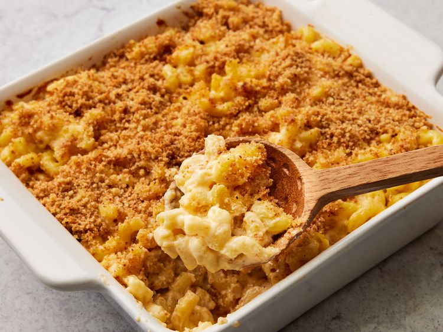

Home
Homemade Mac and Cheese

Preparation information
Nutrition Facts (per serving)
- Calories: 845
- Fat: 48g
- Carbs: 65g
- Protein: 37g
Ingredients
Macaroni and Cheese:
- 8 ounces uncooked elbow macaroni
- 1/4 cup salted butter
- 3 tablespoons all-purpose flour
- 2 1/2 cups milk, or more as needed
- 2 cups shredded sharp Cheddar cheese
- 1/2 cup finely grated Parmesan cheese
- salt and ground black pepper to taste
Bread Crumb Topping:
- tablespoons salted butter
- 1/2 cup dry bread crumbs
- 1 pinch ground paprika
Directions
-
Gather all ingredients. Preheat the oven to 350 degrees F (175 degrees C). Grease an 8-inch square baking dish.

-
To make the macaroni and cheese: Bring a large pot of lightly salted water to a boil.
Add macaroni and simmer, stirring occasionally, until tender yet firm to the bite, about 8 minutes;
it will finish cooking in the oven. Drain and transfer to the prepared baking dish.

-
While the macaroni is cooking, melt 1/4 cup butter in a medium skillet over low heat.
Whisk in flour and stir until the mixture becomes paste-like and light golden brown, 3 to 5 minutes.

-
Gradually whisk 2 ½ cups milk into the flour mixture, and bring to a simmer.

-
Stir in shredded Cheddar and finely grated Parmesan cheeses; season with salt and pepper.
Cook and stir over low heat until cheese is melted and sauce has thickened, 3 to 5 minutes, adding up to 1/2 cup more milk if needed.

-
Pour cheese sauce over macaroni and stir until well combined.

-
Make the bread crumb topping: Melt 2 tablespoons butter in a skillet over medium heat. Add bread crumbs; cook and stir until well coated and browned.

-
Spread bread crumbs over macaroni and cheese, then sprinkle with paprika.

-
Bake in the preheated oven until topping is golden brown and macaroni and cheese is bubbling, about 30 minutes.
